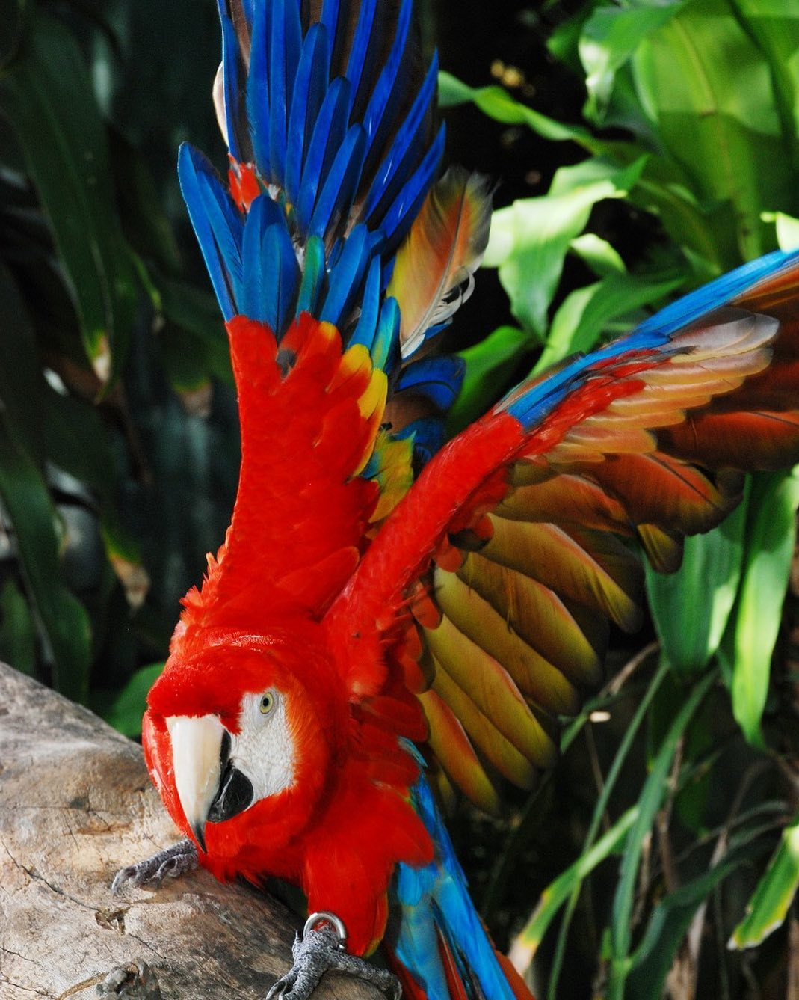
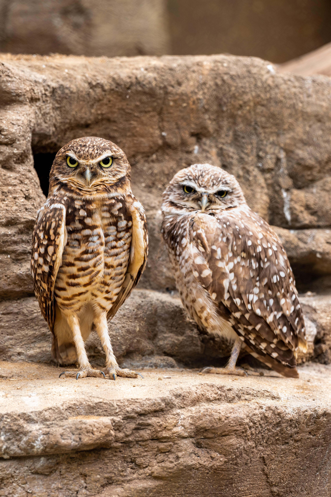
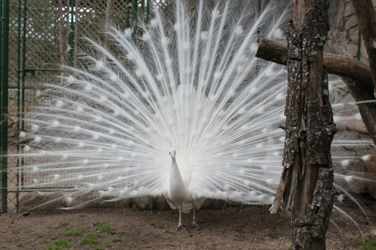
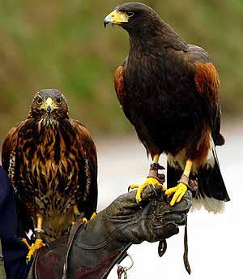

| NOMBRE |
FOTO |
DESCRIPCION |
ALIMENTACION |
| GUACAMAYA |
 |
La guacamaya es un ave grande y muy colorida, conocida por su plumaje vibrante, pico fuerte y curvado, y larga cola. |
Las guacamayas se alimentan de una variedad de alimentos vegetales, incluyendo semillas, frutas, nueces, flores, hojas, tallos y brotes. |
| BÚHO |
 |
Los búhos son aves rapaces, principalmente nocturnas, con cuerpos emplumados, ojos grandes, picos ganchudos y garras afiladas para cazar, y una habilidad única para girar su cabeza hasta 270 grados debido a sus ojos fijos en el cráneo. Tienen una excelente visión y oído, se camuflan con su plumaje y se alimentan de carne, como mamíferos y otras aves, y tienen una variedad de vocalizaciones que incluyen el ulular y el piar. |
Los búhos se alimentan de una gran variedad de animales, que incluyen pequeños mamíferos (como ratones, topillos, conejos y liebres), aves, reptiles, anfibios, peces e insectos, aunque su dieta principal varía según la especie y la región. Son cazadores oportunistas y consumen la presa disponible que encuentren, utilizando técnicas como el acecho en el suelo o en pleno vuelo. |
| PAVO REAL |
 |
El pavo real es un ave terrestre de gran tamaño, famosa por el vibrante y colorido plumaje del macho, que incluye una cola larga y decorada con ocelos, mientras que la hembra es de tonos pardos y más discretos. Habita en Asia, principalmente en bosques y áreas cercanas a cultivos, y es un animal omnívoro que come semillas, frutas, insectos y pequeños animales. Los pavos reales son aves poco sociales que realizan pequeñas voladas para posarse en árboles o huir de depredadores, y son conocidos por emitir graznidos y trompeteos. |
La alimentación del pavo real es omnívora, lo que significa que comen una amplia variedad de alimentos, incluyendo semillas, frutos, bayas, plantas, verduras, insectos, gusanos, caracoles, ranas y pequeños reptiles, como lagartijas. Buscan su alimento principalmente en el suelo, escarbando para encontrar insectos y lombrices, y acuden al agua para beber cada mañana. |
| AGUILA |
 |
Las águilas son aves rapaces grandes y poderosas con picos ganchudos, garras fuertes y una vista excepcionalmente aguda para cazar presas como mamíferos pequeños y reptiles. Poseen alas anchas y un vuelo potente que les permite ascender y descender rápidamente, y se alimentan de una variedad de animales, ocasionalmente carroña, y pueden vivir hasta 25 años. |
Las aguilas se alimentan principalmente de mamíferos como liebres, conejos, ardillas, y perritos de la pradera, aunque su dieta puede incluir aves (cuervos, lechuzas), reptiles (víboras, lagartijas) y, en algunos casos, peces y carroña. La presa específica varía según la especie de águila y la disponibilidad de alimento en su hábitat. |